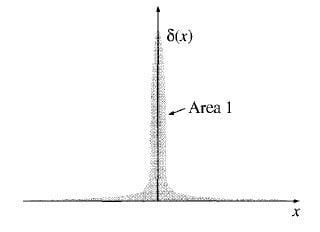
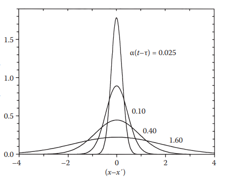

3 Solución numérica por Método de Monte Carlo
Debemos evaluar la naturaleza inherente multiescalar integrando metodologías micro y macroescópicas. Donde a escalas menores impera procesos estocásticos; así, a escala mesoscópica el comportamiento de cada partícula es relevante y tambien los efectos colectivos (como la Ley de Fourier).
Veamos como se comporta una partícula bajo las reglas de Fourier y la ecuación de difusión.
3.1 Interpretación probabilística de la ecuación de transporte de difusión
Pensemos en un experimento mental donde una aguja de Tungsteno con un filo atómico, conserva en su punta unos 4000°C, aquel filo tan diminuto toca la superficie de placa metálica por un microsegundo. Es una placa muy extensa donde sus fronteras tan alejadas no perciben sus efectos de la aguja. ¿Cómo se comportaría la difusión en tal caso?
Representamos el campo compuesto por una sola partícula por la función Delta de Dirac. Misma que tiene las siguientes características:
- Su valor es cero en todo su dominio excepto en el origen (donde se localizaría la partícula).
- La integración en su dominio es cero.
- En el origen tiene valor infinito.
Una función definida cero en todo su dominio excepto en el origen:
\[ \begin{align*} \delta(x) &= 0 \quad \text{excepto si} \quad x=0 \\ \delta(0) &= \infty \end{align*} \]
La función delta de Dirac se define como cero cuando x = 0 e infinita en x = 0, de tal manera que el área bajo la función es la unidad.
La función delta de Dirac \(\delta(x − x_0)\) representa una fuente puntual en el espacio; técnicamente es una partícula, una unidad de “masa” finita dentro de un dominio de tamaño infinitesimal.

Ahora encontramos la solución fundamental a la ecuación de difusión a partir de la concentración de una carga puntual a partir de la función de Green.
¿Por qué la funcipen de Green es clave para una interpretación probabilística?
▶ La función de Green, G (x, t|x0, t0), representa la solución a una ecuación de transporte debido a una fuente puntual (impulso unitario) en (x0, t0).
▶ Matemáticamente, actúa como un propagador que describe cómo la probabilidad (densidad de part´ıculas) se dispersa desde la posición inicial con el tiempo.
▶ Interpretando la fuente puntual como una partícula localizada en x0 (representada por δ(x − x0)).
▶ Así, la solución del problema físico puede verse como el promedio estadístico de lo que experimentan muchas partículas por efecto de las leyes físicas.
▶ En Resumen: establece un vínculo entre la PDE (Ecuación diferencial parcial) y la PDF (función de densidad de probabilidad) que muestrea un método de Monte Carlo.
3.2 Función de Green para el ecuación de Difusión (buscar acrónimo)
Para la ecuación de difusión la función de Green correspondiente es:
\[ \frac{\partial f}{\partial t} = D \nabla^2 f \]
Teniendo como condiciones iniciales que en el tiempo cero (t=0) y en el origen se presenta la función de Dirac.
Su solución representa una función Gaussiana que se desplega en si misma a través del tiempo alcanzado a abarcar el dominio entero.
\[ f (x,t) = \frac{1}{\sqrt{4\pi Dt}}e^{\frac{-x^2}{4Dt}} \]
3.2.1 ¿Cómo resolverla?
A continuación se muestra su resolución derivando esta función de Green, que también se denomina solución fundamental de conducción de calor [1].
En física matemática, una función de Green se define como la respuesta de un sistema a una fuente puntual impulsiva. Una de las propiedades fascinantes de la sísmica.
La función de Green G es la respuesta a una fuente de calor plana e impulsiva de espesor infinitesimal, descrita por el producto de dos funciones delta de Dirac, una para el espacio y otra para el tiempo
Inicialmente, la función de Green es cero hasta que t > τ, y lejos de la fuente de calor, su valor está acotado [1].
La función de Green para el cuerpo infinito se derivará mediante el método de la transformada de Laplace, y aquí se presenta una breve explicación de dicho método.
Para el escenario de una sola dimensión, la condición inicial es que en el origen existe un impulso inicial dado por la función de Dirac (\(\delta\)), \(f(x,0) = \delta (x)\), en un dominio no acotado. El dominio no acotado
\[ \frac{\partial f}{\partial t} = D \frac{\partial^2 f}{\partial^2 t} \]
Para resolver el escenario en una dimensión debemos aplicar la Transformada de Fourier (TDC).
<!-- ! Definición de la transformada de Fourier -->La transformada de Fourier es la expresión natural de la serie de Fourier a la función \(f(x)\) de un periodo infinito. EStá definida en terminos de un par de integrales
\[ F(\omega)=\int_{-\infty}^{\infty} f(x)\,e^{-i\omega x}\,dx \]
\[ f(x)= \mathcal{F}^{-1}\{F(\omega)\} = \frac{1}{2\pi}\int_{-\infty}^{\infty} F(\omega)\,e^{i\omega x}\,d\omega \]
La transformada inversa de Fourier es: \[ f(x) = \frac{1}{2\pi} \int_{-\infty}^{\infty} \hat f(\omega)\, e^{i\omega x} \,d\omega. \]
Aplicando la TDF a ambas partes de la ecuación de Green correspondiente en una dimensión:
\[ \int_{-\infty}^{\infty} \frac{\partial f(x,t)}{\partial t} \,e^{-i\omega x}\,dx = D \int_{-\infty}^{\infty} \frac{\partial^2 f(x,t)}{\partial x^2} \,e^{-i\omega x}\,dx. \]
Evaluación del término izquierdo
Como la integración se realiza respecto a \(x\), la derivada temporal puede extraerse de la integral:
\[ \int_{-\infty}^{\infty} \frac{\partial f(x,t)}{\partial t} \,e^{-i\omega x}\,dx = \frac{\partial}{\partial t} \underbrace{ \int_{-\infty}^{\infty} f(x,t)e^{-i\omega x}\,dx }_{\hat{f}(\omega,t)} = \frac{\partial \hat{f}(\omega,t)}{\partial t} \]
Por definición se sustituye por la TDF.
Evaluación del término de la derecha
\[ I= D \int_{-\infty}^{\infty} \frac{\partial^2 f}{\partial x^2} \,e^{-i\omega x}\,dx \]
Aplicando integración por partes dos veces:
\[ \begin{aligned} I &= \left[ \frac{\partial f}{\partial x} e^{-i\omega x} \right]_{-\infty}^{\infty} + i\omega \int_{-\infty}^{\infty} \frac{\partial f}{\partial x} e^{-i\omega x}\,dx \\ &= i\omega \left( \left[ f\,e^{-i\omega x} \right]_{-\infty}^{\infty} + i\omega \int_{-\infty}^{\infty} f(x,t)e^{-i\omega x}\,dx \right). \end{aligned} \]
Suponiendo que \(f\) y sus derivadas se anulan en el infinito, los términos de frontera desaparecen:
\[ I = -\omega^2 \underbrace{ \int_{-\infty}^{\infty} f(x,t)e^{-i\omega x}\,dx }_{\hat f(\omega,t)}. \]
Por lo tanto,
\[ I=-\omega^2\hat f(\omega,t). \]
Juntando ambos resultados en la igualdad obtenemos:
\[ \frac{\partial \hat f(\omega,t)}{\partial t} = -D\omega^2\hat f(\omega,t). \]
Resolvemos por separación de variables
\[ \int_{0}^{t} \frac{1}{\hat f}\,d\hat f = -\int_{0}^{t} D\omega^2\,dt'. \]
\[ \hat f(\omega,t) = \hat f(\omega,0)\, e^{-D\omega^2 t}. \]
Sin embargo, recordemos que para el tiempo 0, \(f\) está determinada por la función de Dirac.
\[ \hat f(\omega,0) = \int_{-\infty}^{\infty} \delta(x-x') e^{-i\omega x} \,dx = 1 \]
El área bajo la curva de la función de Dirac es 1. Por lo tanto la solución de le ecuación de difusión en le espacio de Fourier es:
\[ \hat f(\omega,t) = e^{-D\omega^2 t}\ \]
Para regresar al dominio de \(x\) debemos aplicar la transformada inversa de Fourier:
\[ f(x,t) = \frac{1}{2\pi} \int_{-\infty}^{\infty} e^{-D\omega^2 t} e^{i\omega x} \,d\omega. \]
Ánimo ya casi termina
Para resover la integral, primero combinamos los exponentes.
\[ f(x,t) = \frac{1}{2\pi} \int_{-\infty}^{\infty} \exp\!\left( -Dt\,\omega^2+i\omega x \right) \,d\omega. \]
La integral es una integral gaussiana. Completando el cuadrado,
\[ -Dt\,\omega^2+i\omega x = -Dt \left( \omega-\frac{i x}{2Dt} \right)^2 -\frac{x^2}{4Dt}. \]
Por tanto,
\[ f(x,t) = \frac{e^{-x^2/(4Dt)}}{2\pi} \int_{-\infty}^{\infty} e^{-Dt\left(\omega-\frac{i x}{2Dt}\right)^2} \,d\omega. \]
Usando la identidad gaussiana
\[ \int_{-\infty}^{\infty} e^{-a u^2}\,du = \sqrt{\frac{\pi}{a}}, \qquad a>0, \]
con \(a=Dt\), se obtiene
\[ f(x,t) = \frac{e^{-x^2/(4Dt)}}{2\pi} \sqrt{\frac{\pi}{Dt}}. \]
Simplificando,
\[ f(x,t) = \frac{1}{2\sqrt{\pi Dt}} \exp\!\left( -\frac{x^2}{4Dt} \right). \]
Equivalentemente,
\[ \boxed{ f(x,t) = \frac{1}{\sqrt{4\pi Dt}} \exp\!\left( -\frac{x^2}{4Dt} \right)} \]
3.2.2 Función de Green como propagador
La función de Green actúa como un propagador, describiendo cómo se propaga la densidad de probabilidad de x0 a x a lo largo del tiempo.
La solución en este sistema de referencia se comporta como una gaussiana que se extiende y está centrada en la posición móvil x = vt.

Es la conocida función de Green para la ecuación de difusión. Este propagador gaussiano constituye la base para el muestreo de los desplazamientos de las partículas en las simulaciones de Monte Carlo.
3.3 Referencias
[1] D. Cole, V. Beck, Haji-Sheikh, B. Litkouhi.(2011). Heat conduction using Green´s Functions. Series in computational and physical Processes in Mechanics and thermal sciences. CRC Press. 2nd ed.